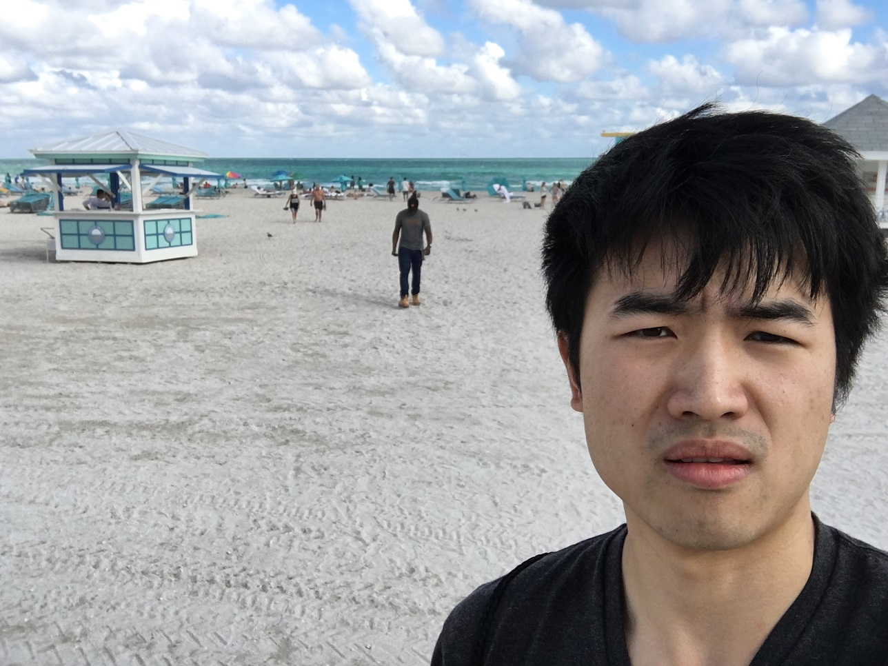

Over this new year, I went for a road trip with my labmate Yukai, UT Dallas student Quling who is Yukai's friend from his hometown, YangGuan from my neighber lab and his wife. Well they call this a road trip, I will probably call it an advanture.
So lets take a look of the route we drove from Purdue to Key West.
The driving was a road rage. We drove day and night, and most time I was driving. I still remember during the night time I hit over 100 mph while people in the car didn't even notice and they kept talking jokes.
Here is a picture of Nashiville. At Nashiville, we visited the Vanderbilt University. Everyone agreed Purdue is a better school haha.

From Nashville, we went to Altlanta International Airport to pick up Quling. It was during the rush hour when we entering Atlanta City around 5 pm, so it took us longer to get to the airport; plus there is a timezone switching from Tennessee to Georgia. So Quling literally waited for us at the airport for two hours haha.
We did not stay in Atlanta, instead, we left right after we got Quling. I drove from Atlanta, Georgia to Gainsville, Florida on average 90 mph, so we arrived at Gainsville at 11 pm in the night haha
Stayed one night, we kept riding to Orlando. First thing in the morning at Orlando is to visit the Advanture Islands at Disney world.

The rollercoaster was so fun. I was scared the shit out. We played for like six Adventures, and a day was gone. You must go to visit Harry Potter's school Hogwarts.
We stayed one night at Orlando, and the next morning we visited a fancy museum about procelain arts.
After the museum, we drove to Miami. Spend one night ooking around at Miami Beach, we had some good Peru Cuisine.
The next morning, planning to see the sun rise, we woke up at 6 am arrived at Key Biscayne Beach about 7 am. I did not wash my face neither shaving at all, so I would not post my photo here.
Took a nap, then we went to the Miami Beach. We got sunshine to get tant and swimming with bikinis and sharks woohoo!

The next stop is Key West. Seeing the ocean on both sides of Rout 1, it was quite boring. There were few restrooms along the road. So we basically had to hold the pee

It was Christmas when we arrived Key West.

All right, it is enogh to the most Southern point, and now we got to go back. I will update the road trip part II